11.3 Strong Propagators for Capacity Constraints
In this section we introduce the ideas for stronger propagation employed for capacity constraints in Oz.
First we show the weakness of the propagators we have introduced so far. We consider three tasks  ,
,  and
and  , each with duration 8 and with the domain . If we state for the pairs 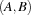,
, each with duration 8 and with the domain . If we state for the pairs 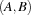,  and
and  that the contained tasks must not overlap in time by using reified constraints or by applying
that the contained tasks must not overlap in time by using reified constraints or by applying Schedule.serializedDisj, no further propagation will take place. This is due to the local reasoning on task pairs. For each pair no value in the corresponding domains can be discarded. On the other hand, the tasks must be scheduled between time point 1 and 18 (the latest completion time of either , or ). But because the overall duration is 24, this is impossible.
Hence, we will use stronger propagators reasoning simultaneously on the whole set of tasks on a resource. The principal ideas behind this reasoning are simple but very powerful. First, for an arbitrary set of tasks  to be scheduled on the same resource, the available time must be sufficient (see the example above). Furthermore, we check whether a task
to be scheduled on the same resource, the available time must be sufficient (see the example above). Furthermore, we check whether a task  in math/S/ must be scheduled as the first or last task of (and analogously if is not in ).
in math/S/ must be scheduled as the first or last task of (and analogously if is not in ).
We introduce the following abbreviations for a task .
| least possible start time for |
| largest possible start time for |
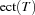 | earliest completion time for |
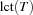 | latest possible completion time for |


For a set of tasks we define
|
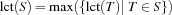 |
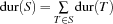 |

If the condition

holds, no schedule of the tasks in can exist. A strong propagator for capacity constraints fails in this case.
Now we introduce some domain reductions by considering a task and a set of tasks where does not occur in . Assume that we can show that cannot be scheduled after all tasks in and that canot be scheduled between two tasks in (if contains at least two tasks). In this case we can conclude that must be scheduled before all tasks in .
More formally, if

holds, cannot be scheduled between 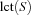 and  (it cannot be scheduled between two tasks of if contains at least two tasks). If
(it cannot be scheduled between two tasks of if contains at least two tasks). If
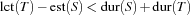
holds, cannot be scheduled after all tasks in . Hence, if both conditions hold, must be scheduled before all tasks of and corresponding propagators can be imposed, narrowing the domains of variables.
Analogously, if

and
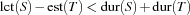
holds, must be last.
edge-finding
Similar rules can be formulated if is contained in . For this kind of reasoning, the term edge-finding was coined in [AC91]. There are several variations of this idea in [CP89], [AC91], [CP94], [MS96] for the Operations Research community and in [Nui94], [CL94], [BLN95], [Wür96] for the constraint programming community; they differ in the amount of propagation and which sets are considered for edge-finding. The resulting propagators do a lot of propagation, but are also more expensive than e.g. reified constraints. Depending on the problem, one has to choose an appropriate propagator.
For unary resources Oz provides two propagators employing edge-finding to implement capacity constraints. The propagator Schedule.serialize is an improved version of an algorithm described in [MS96]. A single propagation step has complexity  where
where  is the number of tasks the propagator is reasoning on, i. e. the number of tasks on the resource considered by the propagator. Because the propagator runs until propagation reaches a fixed-point, we have the overall complexity of 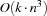 when
is the number of tasks the propagator is reasoning on, i. e. the number of tasks on the resource considered by the propagator. Because the propagator runs until propagation reaches a fixed-point, we have the overall complexity of 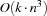 when  is the size of the largest domain of a task's start time (at most
is the size of the largest domain of a task's start time (at most  values can be deleted from the domains of task variables).
values can be deleted from the domains of task variables).
The propagator Schedule.taskIntervals provides weaker propagation than described in [CL94] but provides stronger propagation than Schedule.serialize. While a single propagation step has complexity 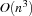, the overall complexity is 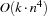.
Now we can solve the bridge construction problem with a propagator using edge-finding. By the statement
{ExploreBest {Compile Bridge
Schedule.serialized
DistributeSorted}
Earlier}
we compute the optimal solution in a full search tree with 508 choice nodes instead of 1268 as in the section before.
proof of optimality
The improvement by strong propagation becomes even more dramatic if we constrain the bridge problem further by stating that the makespan must be strictly smaller than 104. Since we know that 104 is the optimal solution we, thus, prove optimality of this makespan. The modified problem specification is
OptBridge = {AdjoinAt Bridge constraints
proc {$ Start Dur}
{Bridge.constraints Start Dur}
Start.pe <: 104
end}
Solving the modified problem with the simple propagator by
{ExploreBest {Compile OptBridge
Schedule.serializedDisj
DistributeSorted}
Earlier}
we obtain a search tree with 342 choice nodes. Using the edge-finding propagator Schedule.serialized instead we obtain a search tree with only 22 choice nodes. By using Schedule.taskIntervals the search tree shrinks further to the size of 17 choice nodes.
Note that for the proof of optimality the domains of the start times are rather narrow. If we start with an unconstrained problem, the domains are rather wide. But if the domains are more narrow compared to the durations of the tasks, the conditions we have described above are more likely to become true and propagation may take place. This is the reason why edge-finding turns out to be a stronger improvement for the proof of optimality.